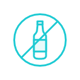
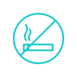

자주 묻는 질문
궁금한 점만 모아 쏙쏙 알려드립니다.
- 나만의 캠핑카 신청 자격이 어떻게 되나요?
맥주를 마실 수 있는 20세 이상 성인 누구나 신청 가능합니다. 단! 여행자 분들 중 운전자는 캠핑카 운전을 능숙하게 하실 수 있는 만 26세 이상, 운전 면허 취득 3년 이상이어야 합니다. 운전자가 음주 운전으로 인한 면허 취소 및 정지 등
운전 면허에 하자가 있는 경우 신청이 불가하며,
당첨 시 취소됩니다. - 일상을 여행으로 움직여 특별한 영감을 얻고 싶으신 분
- 내 취향, 나를 발견하는 여행을 떠나고 싶으신 분
- 게임, 만화책, 왁자지껄 친구들과 노는게 제일 좋은 분
- 일상에 지쳐 명상, 요가, 고요함, 충분한 쉼이 당장이라도 필요한 분
- 독서, 오래된 LP, 사진 찍는 것을 좋아하는 감성 넘치는 분 - 당첨자 선정은 언제, 어떤식으로 하나요?
당첨자는 무작위 추첨 방식으로 선정되며, 발표는 매주 월요일, 전화 또는 문자로 개별적으로 연락드릴 예정입니다. 미당첨자 분들께는 별도 연락을 드리지 않는 점 양해 부탁드립니다.
- 당첨 확률을 높일 수 있는 팁이 있나요?
- 나만의 캠핑카를 타고 여행을 떠나고 싶은 친구 또는 가족에게 공유하고 모두 함께 신청해보세요.
(내가 당첨이 안되더라도, 나와 함께 신청한 친구 또는 가족이 당첨되면 함께 여행을 떠날 수 있어요.)
- 내가 만든 여행 일러스트를 SNS에 공유하고, 관심있는 친구들이 함께 신청하면 당첨 확률이 높아 질 수 있어요!
- 나만의 캠핑카는 매주 당첨자를 선정하며, 미당첨 시에는 중복으로 매주 신청이 가능합니다. (기 당첨자는 중복 당첨 제외) - 몇 명까지 떠날 수 있나요?
나만의 캠핑카는 4인승 차량으로, 4인 이상 탑승이 불가합니다................................................................................
- 반려 동물 동반이 가능한가요?
반려 동물은 가능하오나, 이동 시 전용 케이지에 탑승 부탁드립니다. 캠핑장 이용 시 반려 동물의 출입 가능 여부 사전 확인 부탁드립니다.
- 캠핑 용품은 준비되어있나요?
기본적인 캠핑 용품(테이블, 의자, 불명 화로, 바베큐 화로, 조리도구, 랜턴, 토치 등)이 구비되어 있습니다. 불멍, 바베큐 시 필요한 장작 또는 숯과 가스는 직접 준비해주셔야 합니다.
- 여행지는 가이드대로만 방문해야하나요?
여행지는 제주맥주가 추천만 드리는 것으로, 꼭 해당 여행지를 방문하시지 않아도 됩니다. 캠핑카 차박이 가능한 곳인지 확인하셔서, 가고자 하시는 여행지를 자유롭게 선택해주세요. 출발 차고지 위치는 경기도 파주시 운정역 근처입니다.
- 여행지는 가이드대로만 방문해야하나요?
여행지는 제주맥주가 추천만 드리는 것으로, 꼭 해당 여행지를 방문하시지 않아도 됩니다. 캠핑카 차박이 가능한 곳인지 확인하셔서, 가고자 하시는 여행지를 자유롭게 선택해주세요. 출발 차고지 위치는 경기도 파주시 운정역 근처입니다.
PICK UP
주의사항을 꼼꼼히 읽어보신 후캠핑카 이용에 불편 없으시길 바랍니다.

-
픽업 장소
-
경기도 파주시
-
픽업 / 반납시간
-
오전 11시 / 오후 7시
-
픽업 문의
-
02-2235-5559
-
음주운전 자가키트
-
측정 후 캠핑카 키 제공
-

음주운전 금지
술에 취한 상태로 절대
캠핑카를 운전하지마세요 -

실내흡연 금지
캠핑카 내에서는
절대로 금연해주세요 -
픽업 시간 준수
픽업 시간과 반납 시간을
준수해주세요